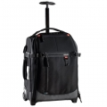

阔影者49T拉杆箱符合登记行李箱尺寸，重量轻，携带方便。但这并意味着它的内部空间较小，实际上，它拥有较大的内部空间，可容纳一台带有变焦镜头的数码单反相机、额外的变焦镜头和其他镜头、闪光灯和其他配件。具有良好保护性的电脑隔层可安全保护您的电脑。仅需取出可调整的内部隔板，阔影者49T既可用作一般用途的行李箱，以提供更大内部空间。带有快速调节织带的三脚架挂包，可让您更加便捷地携带相机三脚架，当您不需要使用三脚架挂包时，可将其方便地折叠起来。